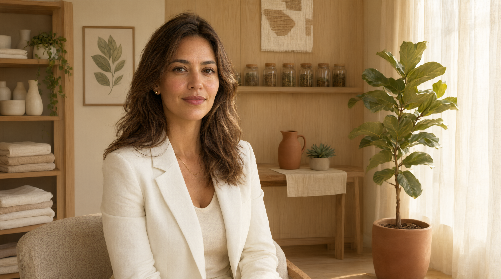
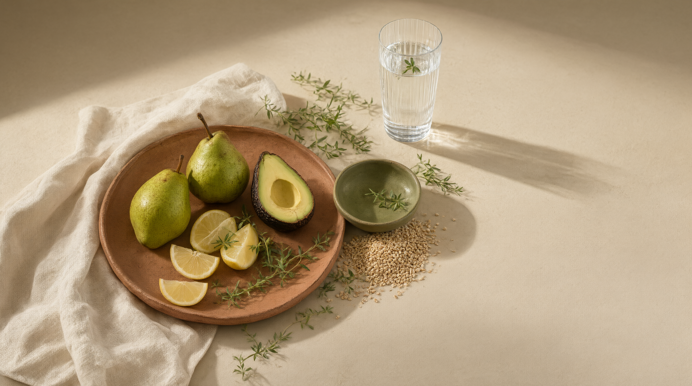
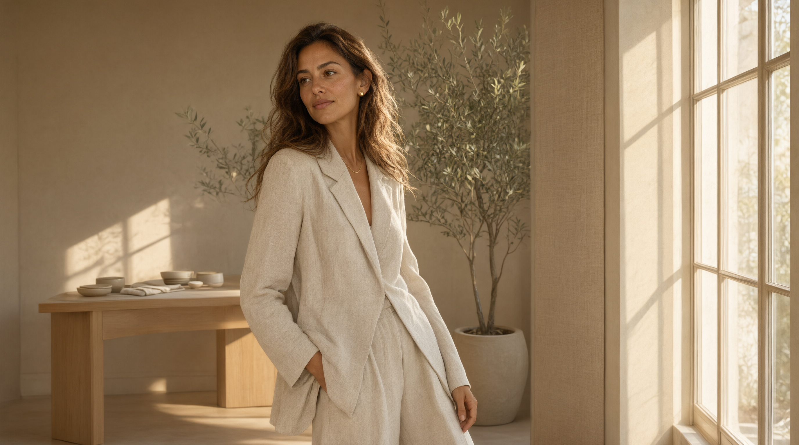

Escuta individual
Conhecer sua rotina, suas preferências e o contexto por trás de cada escolha.
Nutrição com presença
Nutrição baseada em ciência, construída para respeitar sua rotina, suas escolhas e a sua individualidade.

Uma nova perspectiva
Cuidar da alimentação não deveria significar se afastar de tudo o que faz parte de você.
O ponto de partida é a escuta. Sua rotina, suas preferências, sua história e seus objetivos merecem espaço em qualquer estratégia de cuidado.
Conheça os princípios
O cuidado acontece nos detalhes ↗Clareza em cada escolha
Não existe uma fórmula que sirva para todas as pessoas. Existe um processo de cuidado que começa entendendo quem está do outro lado.
Conhecer sua rotina, suas preferências e o contexto por trás de cada escolha.
Construir caminhos alimentares que façam sentido fora do papel e dentro da vida real.
Observar, reavaliar e ajustar o percurso respeitando a individualidade.
Além do consultório
Na mesa compartilhada, no movimento possível, no descanso e nas pequenas escolhas que compõem os dias.

PresençaPrazer, sou Helena
Acredito que uma relação mais equilibrada com a alimentação começa quando a pessoa inteira é considerada.
Rotina, preferências, contexto e objetivos fazem parte da conversa. A nutrição precisa encontrar lugar na vida como ela é — com consistência, informação e respeito à individualidade.
Da conversa ao acompanhamento
Primeiro encontro
Um espaço para entender expectativas, necessidades e objetivos.
Conhecer o contexto
Um olhar atento para hábitos, rotina e particularidades.
Construir possibilidades
Uma estratégia individualizada, pensada para a vida real.
Seguir em conjunto
Um percurso que pode ser observado, revisto e ajustado.
Uma ideia para levar
O melhor cuidado é aquele que encontra espaço para existir na sua vida.Uma abordagem que respeita a individualidade.
Perguntas frequentes
Algumas respostas para ajudar você a entender como uma jornada de acompanhamento pode funcionar.
Não. A proposta apresentada aqui parte da individualidade: rotina, preferências, contexto e objetivos precisam ser considerados em cada percurso.
O primeiro encontro é uma oportunidade para conversar, compreender necessidades e alinhar expectativas. Os detalhes do atendimento devem ser definidos pela profissional responsável.
Os formatos de atendimento dependem da disponibilidade e das condições de trabalho da profissional. Consulte os canais oficiais para confirmar essa informação.
Uma conversa inicial pode ajudar a entender suas necessidades e avaliar se a proposta de acompanhamento faz sentido para você.
O próximo capítulo começa com uma conversa
Conheça uma abordagem nutricional que considera sua individualidade e respeita sua vida real.
Vamos conversar Canal de contato demonstrativo — será configurado com os dados autorizados da profissional.